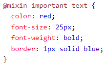

colocar uma animação
Ferramentas JavaScript
Um navegador não entende o código Sass. Portanto, você precisará de um pré-processador Sass para converter o código Sass em CSS padrão..
Este processo é denominado transpilar. Portanto, você precisa fornecer a um transpiler (algum tipo de programa) algum código Sass e, em seguida, obter algum código CSS de volta.
Os arquivos Sass têm a extensão de arquivo ".scss".
Sistema operacional - Sass é independente de plataforma;
Suporte ao navegador - Sass funciona em Edge / IE (a partir do IE 8), Firefox, Chrome, Safari, Opera;
Linguagem de programação - Sass é baseado em Ruby.
Existem várias maneiras de instalar o Sass em seu sistema. Existem muitos aplicativos que o colocarão em funcionamento com o Sass em poucos minutos para Mac, Windows e Linux. Alguns deles são gratuitos, mas alguns são aplicativos pagos. Você pode ler mais sobre eles aqui: sass-lang.com/install
Variáveis são uma forma de armazenar informações que você pode reutilizar mais tarde. Com o Sass, você pode armazenar informações em variáveis, como:
strings;
numbers;
colors;
booleans;
lists;
nulls.
Sass usa o símbolo $, seguido por um nome, para declarar variáveis:
Exemplo: $variablename: value;O Sass permite que você aninhe seletores CSS da mesma forma que o HTML, praticamente automático, diferente do CSS que as regras são definidas uma a uma (não aninhadas).
Muitas propriedades CSS têm o mesmo prefixo, como font-family, font-size e font-weight ou text-align, text-transform e text-overflow. Com Sass, você pode escrevê-los como propriedades aninhadas.
Sass mantém o código CSS DRY (Don't Repeat Yourself). Uma maneira de escrever código DRY é manter o código relacionado em arquivos separados.
Você pode criar pequenos arquivos com fragmentos CSS para incluir em outros arquivos Sass. Exemplos de tais arquivos podem ser: arquivo de redefinição, variáveis, cores, fontes, tamanhos de fonte, etc.
Assim como o CSS, o Sass também oferece suporte à @import diretiva. A @importdiretiva permite incluir o conteúdo de um arquivo em outro.
A @importdiretiva CSS tem uma grande desvantagem devido a problemas de desempenho; ele cria uma solicitação HTTP extra cada vez que você o chama. No entanto, a @import diretiva Sass inclui o arquivo no CSS; portanto, nenhuma chamada HTTP extra é necessária no tempo de execução!
OBS: Você não precisa especificar uma extensão de arquivo, o Sass assume automaticamente que você se refere a um arquivo .sass ou .scss. Você também pode importar arquivos CSS. A @import diretiva importa o arquivo e quaisquer variáveis ou mixins definidos no arquivo importado podem então ser usados no arquivo principal.
Você pode importar quantos arquivos precisar no arquivo principal, como exemplo:
@import "variables";
@import "colors";
@import "reset";
Por padrão, o Sass transpila todos os arquivos .scss diretamente. No entanto, quando você deseja importar um arquivo, não precisa que o arquivo seja transpilado diretamente.
O Sass tem um mecanismo para isso: se você iniciar o nome do arquivo com um sublinhado, o Sass não o transpilará. Os arquivos nomeados dessa forma são chamados de parciais no Sass.
Portanto, um arquivo Sass parcial é nomeado com um sublinhado inicial, Sintaxe parcial do Sass: _filename.
A @mixin diretiva permite criar código CSS que deve ser reutilizado em todo o site.
A @include diretiva é criada para permitir que você use (inclua) o mixin.
Sass @mixin Sintaxe:
O exemplo a seguir cria um mixin chamado "important-text", Sintaxe SCSS: 
Dica: uma dica sobre hifens e sublinhados no Sass: hifens e sublinhados são considerados iguais. Isso significa que @mixin important-text {} e @mixin important_text {} são considerados o mesmo mixin!
A @include diretiva é usada para incluir um mixin.Sass @include mixin Sintaxe: